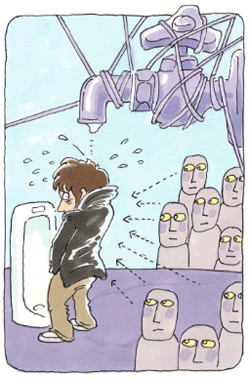

広場恐怖1
頻尿恐怖から視線恐怖、対人恐怖になって
（頻尿恐怖、視線恐怖、対人恐怖、他）
石田 順次（仮名）33歳・会社員
排尿困難になった背景
私は両親と3歳上の姉の4人家族、その長男末っ子として甘やかされて育てられました。自分でも嫌になるくらいの泣き虫で人の輪に入っていく事も苦手、クラスでもあまり目立たなかった存在だったと思います。

中学一年生の時、休み時間に男女数名の友人たちと雑談をしていると、ある友人に身体的な事でからかわれたのをきっかけに、またからかわれるのではないかという思いが頭から離れなくなりました。特に学校のトイレに行くことに緊張感を持つようになり、それからというもの、そんな自分を頭がおかしくなってしまったと思い込みました。誰にも相談できないままなんとか自分だけで症状を解決しようとしましたが上手くいかず、焦れば焦るほど症状は固着していきました。次第に友人以外の誰もが、私の頭がおかしくなってしまった事を見抜くのではないかと思えば思うほどに緊張感は増していき、完全にトイレで用が足せなくなるまでそう時間はかかりませんでした。
排尿困難から対人恐怖へ
初めは排尿困難という、トイレだけでの視線恐怖症であったはずが、それがトイレ以外、日常生活全般に対象領域が拡大していき、その視線恐怖は、対人恐怖症へと変化していきました。友達に言い知れない引け目を感じるようになった私は、次第に友人たちと距離をとるようになり、中学、高校、大学と孤独感、疎外感を持ち続け生活を続けました。悶々とした気持ちも持ちながらも負けん気だけで社会人となった私は、仕事に行き詰ると仕事をさぼっては自己嫌悪に陥ったり、自己啓発の本や心理学の本を読み、「やればできる」「気を大きく持て」などと自己暗示をかけて過ごしました。
会社に入って3年目で結婚をし、妻の妊娠を機にイヌを飼ったのですが、イヌが子供に嫉妬をして暴れだし、新築のマンションの柱や壁などをボロボロにしました。そして或る日私が仕事から帰宅して玄関を開けると、イヌは家中を徘徊し、リビングでは子供が子供用サークルの中で泣き叫び、その傍では妻がテーブルでふさぎ込んでいるのが見えました。「私が必死で築いてきた、守ってきた家庭って一体なんだったんだろう。」その瞬間私は、言い知れぬ不安感、恐怖感に襲われました。それからなんとか家の中に入り、イヌをゲージに入れ、子供を抱きかかえ、私は泣きながら妻に告げました。「もうやってられない」「とりあえずイヌを処分する」と。
森田療法と出会って
自己啓発の本や、心理学、精神医学の本を読み続けた私は、その頃偶然に書店で森田関係の本に出会いました。自分がずっと生き辛いと思ってきた本当の理由は、私の神経質の素質が基礎になっているのではと思い、インターネットで森田療法の事を調べて、メンタルヘルス岡本記念財団の図書室を訪れ、そこではじめて図書室の管理をされ、今も懇意にして頂いているMさん（当財団職員）と出会いました。
Mさんの紹介で、神経症の自助グループである生活の発見会の集談会に参加するようになってすぐに、「岡山合宿」案内を頂きました。合宿で行われる学習の準備をWEB上の掲示板（非公開）でするにつれ、予想以上に他の参加者の意気込みが伝わってきて、気後れする気持ちでいましたが、参加者全員の熱い思いに後押しされ、いつの間にか合宿そのものに没頭していました。
なによりも緊張感のある学習会は、時間の経過とともに胸を突き刺す感動があり、まだ20歳代の若い彼、彼女達が一生懸命に司会を務める、その彼らの意気込みに引き込まれていきました。彼らの視線の先にMさんがおり、その後ろに、森田先生がいると、私の目に映った合宿でした。背中に悪寒が走るようなゾクゾクとする時間が流れていきました。「神経質の原石は取り除くものではなく、むしろしっかり磨くもの。」今回の合宿のテーマが合宿中ずっと私の胸の奥で鳴り響きました。
また、Mさんがユーモアを交えて解き明かす森田先生の広い心・宇宙理論も印象的でした。森田の宇宙では、喜びの感情も、悲しみの感情も、全てを包み込むことができる。各々の神経質の星は、強迫的に執着すると光輝かず、むしろ自由に心の宇宙に浮かばせておけば、やがては宇宙の彼方へ飛んで行き、一段とその星は光り輝き出すということを教わりました。
にわか仕込みに森田の理論を学習した私は、「とらわれ」「はからい」「あるがまま」を、「とらわれ」て、「はからう」から「あるがまま」でいることができないのだと勘違いして、「とらられ」「はからう」事を悪者扱いしていましたが、「とらわれ」「はからい」「あるがまま」その全てを、全ての感情を全肯定することが、本当の森田の世界であると学びました。
努力即幸福
私はこれまで生きてきた中で、つくづく生きづらさを感じ、この生きづらさはいったい何なのだろうと思って生きてきました。周りの友達は楽しそうなのに、なぜか自分だけがこんなにも苦しいんだと人生を恨んでいました。特に毎日が楽しいわけでも、これから楽しくなる当てもなく、混沌としたこの世の中をただ苦しながら生き抜き、そして死んでいくだけ。そんな世の中に、私は誰に生んで欲しいと頼んだわけもなく、両親を、そして神仏をずっと恨んで生きてきました。
私は、小胆であり、それでも負けん気だけは強い、ただの小さな森田神経質者の、そのひとりだったということです。生まれる事に不条理はあるかもしれないけれど、この世に平等なのは死ぬということ。これからどういう風に生きて、どういう風に死ぬかが重要であるとわかってきました。森田神経質だからこそ悩み、一生をただで終わりたくない、偉くなりたい、真人間になりたいと憧れるからこそ苦悩するということ。これらがあの岡山合宿で体験できたのでした。
それまでは、気が小さく、くだらない事にいちいち傷つき、心配性であった自分のそんな性格を忌み嫌い、なんとか性格を改善し、克服しようとしてきましたが、その努力が報われ大いに嬉しく思うのです。まだ、森田の理論をこれから勉強していくのですが、すでに、森田神経質万歳と答えることが出来ました。
日々の生活に打ちのめされ、どこかに逃げ込もうとしたり、その苦しさを抑圧し、押さえつけようとしても、なぜか歯を食いしばって踏ん張ろうと頑張っている自分がいる。それは、私の心の中には私にはどうすることも出来ない生への執着、「生の欲望」と「死の恐怖」が大きく横たわり、その溶鉱炉は絶えず燃え盛っていること。そしてそれがこれまでも、そしてこれからも、私を突き動かしている原動力となっていくということ。そんなことがおぼろげに分かってきました。
私が追い求めていた人生はこれからも、バラ色の人生でも、金色の人生でもない、ごくありふれた人生かもしれない。それでも私は私の背丈にあった分相応の生活の中で、神経質を磨いて、気になることをいちいち気にしながら日々を過ごしていく事が、実は幸福なんじゃないかと、そんな心の準備があの岡山合宿でできたような気がします。
両親や神様に、私がこの世に生まれてきたことを感謝するのはまだ先ですが、「努力即幸福」「幸福即努力」そんな努力三昧の中で何かを掴むことができたら、いつかは感謝ができそうな気がしています。そして何より、これらのことは一人で森田療法を勉強しても決してわからなかった事だと思います。これからも、気張らず、奢らず、そしてなにより安きにつかず、仲間たちと頑張っていきたいと思います。